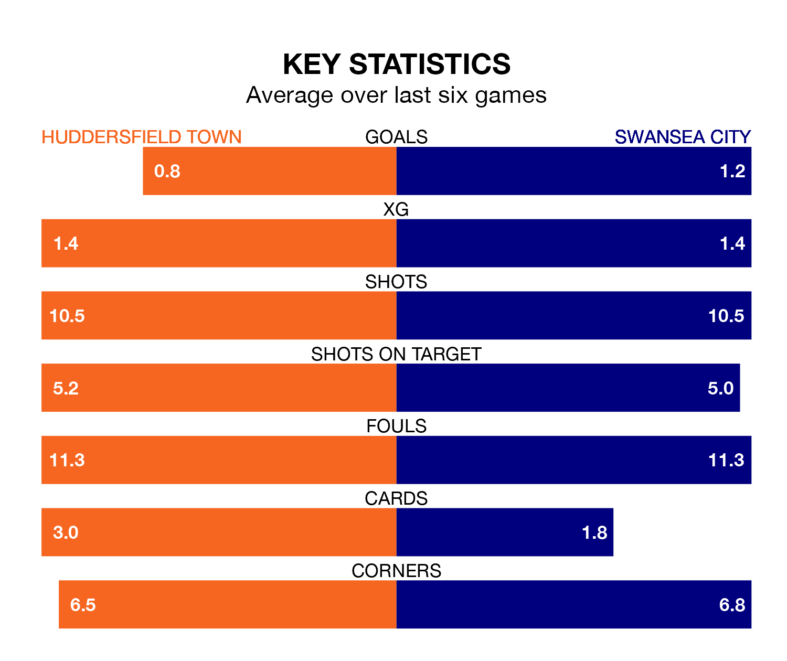

Swansea City travel to Huddersfield Town on Saturday in EFL Championship.
The visitors come into the game on the back of a win in their last match, having beaten Rotherham United 1-0 at home, with a goal from Andrew Ferai Rinomhota.
The Terriers, meanwhile, drew their last match, 1-1 against Bristol City, with their goal scored by Josh Koroma.
Huddersfield are 22nd in the table after 43 games, of which they have won nine and drawn 17, earning 44 points.
Swansea are eight places ahead of Town in 14th, with 14 wins and 11 draws putting them on 53 points.
In the last 10 years, Huddersfield and Swansea have played each other on 11 occasions. Huddersfield won two of them, Swansea four, and they drew five times.
On average, the Terriers scored 0.9 goals and the Swans 1.1 in those matches.
Their last meeting was on December 2, when they played out a 1-1 draw.
With 47 goals in 43 games so far this season, the Terriers are scoring at below the league average rate with 1.1 goals per game. And they are conceding more than average, letting in 70 goals at a rate of 1.6 per game.
City are also below average scorers, with 1.2 goals per game, compared to a league average of 1.3. They have conceded 1.4 goals per game.
The home side are in disappointing form in EFL Championship, with one win and three draws from their last six games.
With three wins and a draw over that period, the Swans' form is better – they have taken 10 points from 18, compared to Huddersfield's six.
Updated: 11:31 (UTC), 15/04/24